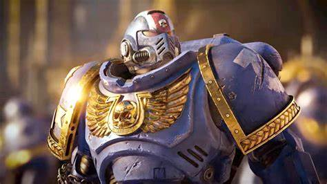

En esta pagina se dara una breve introduccion hacerca de que es la franquicia de Warhammer 40k
Warhammer 40000 es una franquicia de ciencia ficción y fantasía oscura para adultos o grimdark como suele ser referido, fundada en el año 1987 creada por la compañía británica games workshop. Esta inicio como una adaptación de otro gran título de games workshop, llamado Warhammer fantasy
